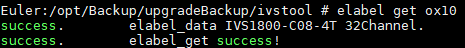
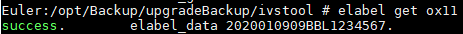
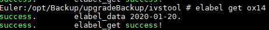

如何查看设备电子标签、电子条码和制造日期
现象描述
如何查看设备电子标签、电子条码和制造日期？
解决方法
以root用户登录操作系统（ 如何通过网口登录操作系统）。再分别执行以下命令。
如何通过网口登录操作系统）。再分别执行以下命令。
- 执行以下命令查看设备电子标签。
elabel get 0x10

如果查询不到设备电子标签，则需要联系400热线返厂维修。
- 执行以下命令查看设备电子条码。
elabel get 0x11

- 执行以下命令查看设备制造日期。
elabel get 0x14
如果查询不到，那么也可以通过设备电子条码知道设备制造的时间点。
